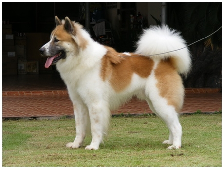

Pet Channel
| ไทยบางแก้ว (Thai Bangkaew) |
|  |
ลักษณะทั่วไป มีขนปุยยาว มีความสง่างาม ว่องไวและแข็งแรง เวลายืนมักเชิดหน้าและโก่งคอคล้ายม้า เป็นสุนัขขนาดกลาง รูปทรงตั้งแต่ช่วงขาหน้าถึงขาหลังเป็นสี่เหลี่ยมจัตุรัส อกกว้างและลึกได้ระดับกับข้อศอก ไหล่กว้าง ท้องไม่คอดกิ่ว หน้าแหลม หูเล็ก หางพวง ขนมีสองชั้น นิสัยรักเจ้าของ ฉลาดปราดเปรียว กล้าหาญ ค่อนข้างดุ สามารถฝึกหัดได้ ชอบเล่นน้ำมาก ขนาดเท่าสุนัขไทยทั่วไป หรือเล็กกว่าเล็กน้อย ไม่อ้วน ความสูงวัดที่ไหล่ ตัวผู้พ่อพันธุ์สูง 42-53 เซนติเมตร ตัวเมียแม่พันธุ์ 38-48 เซนติเมตร น้ำหนักตัวผู้ 14-16 กิโลกรัม ตัวเมีย 13-15 กิโลกรัม ลำตัว ช่วงตัวตอนหน้าใหญ่ ช่วงตัวตอนท้ายค่อนข้างเล็ก ลำตัวหนาปานกลาง อกลึกปานกลาง อกแคบ ยืดอกเวลายืน ส่วนเอวจะคอดน้อยกว่าหมาไทย ท้ายลาด สง่าเหมือนสุนัขจิ้งจอก ส่วนขา ขาหน้าจะใหญ่กว่าขาหลังเล็กน้อย ขาส่วนบนใหญ่และเรียวลงมาถึงข้อเท้า ตั้งตรงแข็งแรง ถ้าดูด้านข้างจะเห็นขนยาวเป็นเส้นตรงจากข้อเท้าด้านหลังขึ้นไปถึงข้อศอกเหมือนขาสิงห์ ขาหลังช่วงล่างมีทั้งตั้งตรงและเกือบตรง ช่วงบนด้านหลังจะมีขนยาว เป็นเส้นตรงขึ้นไปจนถึงโคนหาง เวลายืนท่าปกติจะรับน้ำหนักทรงตัวดี นิ้วเรียงชิดกัน ขนที่ปลายนิ้วยาวหุ้มเล็บ หัว กะโหลกใหญ่ ปากยาวแหลม คอยาวกว่าหมาไทยทั่วไป กะโหลกศีรษะและปากรับกันเป็นรูปสามเหลี่ยม หูเล็กสั้น ตั้งป้องไปข้างหน้า ปลายหูเบนไปข้างๆ เล็กน้อย โคนหูทั้งสองอยู่ห่างกันมากกว่าสุนัขพันธุ์อื่น ๆ จึงใช้เป็นจุดเด่นในการสังเกตว่าเป็นสุนัขบางแก้ว ภายในหูมีขนปรายปิดรูหูอย่างสีดำมีแววของความไม่เชื่อใจใครง่ายๆ ขณะโกรธหรือขู่จะขึ้นแววฟ้า ใสแววที่เรียกกันว่า ตาเขียว จมูกสีดำ ฟันซี่เล็กข่าวคม มีเขี้ยวข้างบน 2 ล่าง 2 ลิ้นเป็นสีชมพู ส่วนมากไม่มีปานดำเหมือนสุนัขไทยทั่วไป ขนสองชั้น หนา ชั้นล่างละเอียดอ่อนนิ่ม ขนชั้นบนยาวเป็นเส้น เมื่อยังเล็กจะมีขนยาวปุกปุยแน่นทั่วตัว แต่เมื่อโตขึ้นจะมีขนยาวปานกลางแน่นทั้งตัว ขนที่กลางหลังตั้งแต่แผงคอไปยังโคนหางจะยาวกว่าขนบริเวณอื่น ๆ มีแผงขนเป็นชั้นช่วงสันหลัง เวลาโกรธจะฟูยกให้เห็นชัดเจน ด้านล่างจากข้อเท้าตอนล่างถึงโคนขาตอนบนจะมีขนยาวฟูพอประมาณ หางต้องเป็นพวง ถือเป็นลักษณะเด่นที่สืบทอดมาจากสุนัขจิ้งจอก |